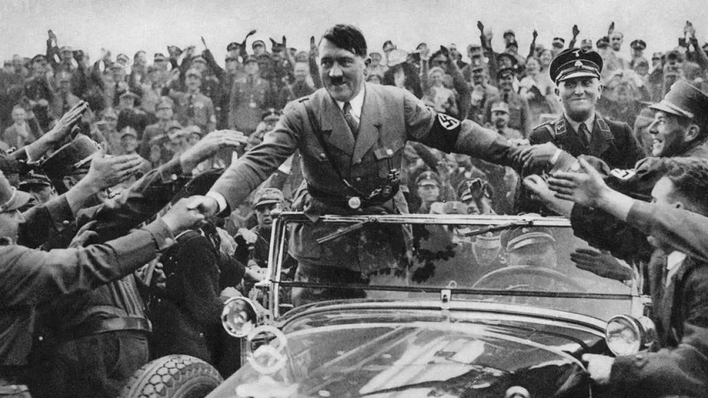

La llegada de Adolf Hitler al poder en Alemania el 30 de enero de 1933 , cuando fue nombrado Canciller por el presidente Paul von Hindenburg, marcó un punto de inflexión devastador en la historia del siglo XX. Este evento puso fin a la República de Weimar y dio inicio al Tercer Reich, sentando las bases para la Segunda Guerra Mundial y el Holocausto.
Contexto Histórico: La República de Weimar en Crisis
Alemania, tras la derrota en la Primera Guerra Mundial, vivía bajo la República de Weimar (1918-1933), un sistema democrático frágil y constantemente asediado. Varios factores contribuyeron a su inestabilidad y al ascenso de Hitler:
El Tratado de Versalles: Las duras condiciones impuestas a Alemania tras la Primera Guerra Mundial (enormes reparaciones de guerra, pérdida de territorios, restricciones militares) generaron un profundo resentimiento nacionalista y un caldo de cultivo para la ultraderecha.
Hiperinflación de 1923: La grave crisis económica llevó a una hiperinflación que pulverizó los ahorros de la clase media y generó una desconfianza masiva en el sistema.
La Gran Depresión de 1929: El impacto de la crisis económica global fue devastador para Alemania, que dependía de créditos estadounidenses. El desempleo masivo (millones de personas sin trabajo) y la pobreza extrema empujaron a muchos a buscar soluciones radicales.
Inestabilidad Política y Polarización: La República de Weimar sufrió una constante sucesión de gobiernos débiles y una creciente polarización entre la extrema izquierda (comunistas) y la extrema derecha (nacionalsocialistas).
Antisemitismo y Nacionalismo Extremo: Un arraigado antisemitismo y un nacionalismo revanchista fueron explotados hábilmente por el Partido Nazi.
El Ascenso del Partido Nazi
El Partido Nacionalsocialista Obrero Alemán (NSDAP) , liderado por Hitler desde 1921, era un partido minoritario a principios de los años 20. Sin embargo, aprovechó la inestabilidad y el descontento popular con una retórica agresiva, prometiendo orden, trabajo y la restauración de la grandeza alemana. Su organización paramilitar, las SA (Sturmabteilung) , y su intensa propaganda contribuyeron a su creciente popularidad.
A partir de la crisis de 1929, el apoyo al NSDAP creció exponencialmente. En las elecciones de julio de 1932, se convirtió en el partido más votado en el Reichstag, aunque sin mayoría absoluta.
Nombramiento como Canciller y Consolidación del Poder
A pesar de las reticencias iniciales del presidente Paul von Hindenburg , y de la élite conservadora que subestimó a Hitler creyendo que podrían controlarlo, el 30 de enero de 1933, Hitler fue nombrado Canciller de Alemania .
Una vez en el poder, Hitler y el Partido Nazi actuaron rápidamente para desmantelar la democracia y establecer una dictadura totalitaria:
Incendio del Reichstag (febrero de 1933): Atribuido falsamente a los comunistas, este evento fue utilizado como pretexto para suspender las libertades civiles y perseguir a la oposición.
Ley Habilitante (marzo de 1933): Esta ley le otorgó a Hitler poderes dictatoriales, permitiéndole legislar sin la aprobación del Parlamento ni del Presidente.
Eliminación de la Oposición: Los partidos políticos, los sindicatos y las organizaciones de la sociedad civil fueron ilegalizados o disueltos. Se crearon campos de concentración para opositores políticos y "enemigos del Estado".
Noche de los Cuchillos Largos (junio de 1934): Hitler purgó a los líderes de las SA y a otros rivales políticos dentro y fuera del partido, consolidando su control absoluto.
Muerte de Hindenburg (agosto de 1934): Tras la muerte del presidente, Hitler unificó los cargos de Canciller y Presidente, autoproclamándose Führer y Canciller del Reich , convirtiéndose en el líder supremo e indiscutible de Alemania.
Consecuencias y Legado
La llegada de Hitler al poder no fue un accidente, sino la culminación de un proceso complejo en un contexto de crisis profunda. Su ascenso condujo directamente a:
El Holocausto: La persecución sistemática y el genocidio de seis millones de judíos y millones de otras minorías.
Segunda Guerra Mundial: Las políticas expansionistas y agresivas del régimen nazi llevaron al estallido del conflicto más devastador de la historia.
Régimen Totalitario: El establecimiento de uno de los regímenes totalitarios más brutales y represivos de la historia, basado en la ideología racista y la propaganda masiva.
La historia de la llegada de Hitler al poder sirve como una advertencia sobre los peligros de la demagogia, el fanatismo y la fragilidad de las instituciones democráticas ante la crisis y el extremismo.
Galería de Imágenes Históricas

Trivia Histórica sobre la Llegada de Hitler al Poder